톡톡 동화극장Toki Toki Tale
Toki Toki Tale톡톡 동화극장
2~5세 아이가 종이를 오려 만든 동화 속으로 들어가 이야기를 함께 이어 가는 동화 앱입니다. 전래동화, 이솝 우화, 세계 명작을 부모님과 함께 읽고 듣습니다. A storybook app for ages 2 to 5, where children step into hand-cut paper tales and carry the story along. Folktales, Aesop’s fables and world classics, read and heard together with a parent.
- 2~5세Ages 2–5
- iPhone, iPad
- 한국어, 영어Korean and English
- 광고 없음No ads
- 로그인 없음No sign-in
- iOS 15.0 이상iOS 15.0 or later
누르고 고르며 잇는 이야기Tap, choose, put in order
화면을 누르고, 고르고, 순서대로 놓으며 이야기를 이어 갑니다. 크기 비교, 같은 색 짝 맞추기, 소리 듣고 고르기, 마음 헤아리기처럼 이야기 속에서 배웁니다. 틀려도 벌이 없습니다.Children move the story on by tapping, choosing and putting things in order: comparing sizes, matching colors, listening and choosing, understanding feelings. There is no penalty for a wrong answer.

화면을 꺼도 읽어 주는 잠자리 동화Bedtime, with the screen off
읽어 주기를 고르면 처음부터 끝까지 소리 내어 읽고, 화면을 꺼도 멈추지 않습니다. 한 편이 끝나면 다음 동화로 이어집니다.Read-aloud mode reads every tale from start to finish and keeps going with the screen off, then moves on to the next tale.


한국어와 영어로In Korean and English
모든 동화를 한국어와 영어로 들을 수 있습니다. 같은 목소리가 천천히 읽고, 화면에 글자가 함께 나옵니다.Every tale can be heard in Korean and in English, read slowly by the same voice with the words shown on screen.

광고도, 로그인도 없이No ads, no sign-in
아이에게 보이는 구매 버튼이 없고, 구매와 기기 연결 앞에는 어른 확인이 있습니다. 인터넷이 없어도 동화를 볼 수 있습니다.No purchase buttons are shown to children, and a grown-up check comes before purchases and linking devices. Tales play without an internet connection.
동화 30편30 tales
앱에 들어 있는 전래동화, 이솝 우화, 세계 명작Korean folktales, Aesop’s fables and world classics in the app
우리 옛이야기Korean folktales 7
 팥죽할멈과 호랑이The Tiger and the Red Bean Porridge
팥죽할멈과 호랑이The Tiger and the Red Bean Porridge 해와 달이 된 오누이The Sun and the Moon
해와 달이 된 오누이The Sun and the Moon 콩쥐 팥쥐Kongjwi and Patjwi
콩쥐 팥쥐Kongjwi and Patjwi 흥부와 놀부Heungbu and Nolbu
흥부와 놀부Heungbu and Nolbu 은혜 갚은 까치The Grateful Magpie
은혜 갚은 까치The Grateful Magpie- 요술 항아리The Magic Jar
 별주부전The Rabbit and the Terrapin
별주부전The Rabbit and the Terrapin
이솝 우화Aesop’s fables 6
 황소와 개구리The Ox and the Frog
황소와 개구리The Ox and the Frog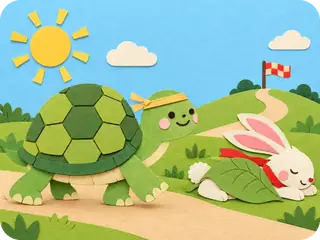
토끼와 거북이The Rabbit and the Turtle 해와 바람The Sun and the Wind
해와 바람The Sun and the Wind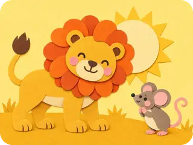
사자와 생쥐The Lion and the Mouse 여우와 두루미The Fox and the Crane
여우와 두루미The Fox and the Crane 개미와 베짱이The Ant and the Grasshopper
개미와 베짱이The Ant and the Grasshopper
세계 명작World classics 17
 커다란 순무The Giant Turnip
커다란 순무The Giant Turnip 골디락스와 곰 세 마리Goldilocks and the Three Bears
골디락스와 곰 세 마리Goldilocks and the Three Bears 브레멘 음악대The Bremen Town Musicians
브레멘 음악대The Bremen Town Musicians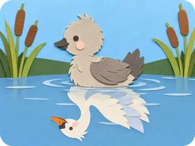
미운 아기 오리The Ugly Duckling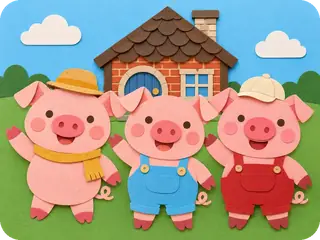
아기 돼지 삼형제The Three Little Pigs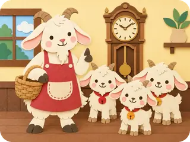
늑대와 일곱 마리 아기 염소The Wolf and the Seven Kids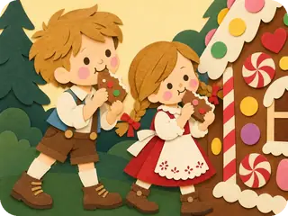
헨젤과 그레텔Hansel and Gretel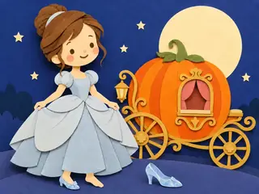
신데렐라Cinderella 빨간 모자Little Red Riding Hood
빨간 모자Little Red Riding Hood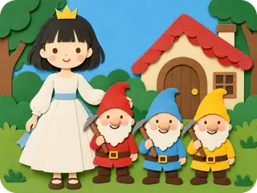
백설공주Snow White 인어공주The Little Mermaid
인어공주The Little Mermaid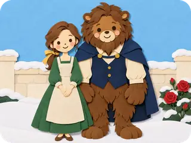
미녀와 야수Beauty and the Beast 빨간 암탉The Little Red Hen
빨간 암탉The Little Red Hen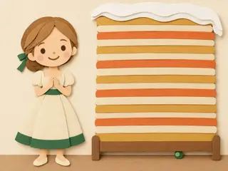
완두콩 공주The Princess and the Pea 라푼젤Rapunzel
라푼젤Rapunzel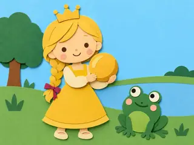
개구리 왕자The Frog Prince 잠자는 숲속의 공주The Sleeping Beauty
잠자는 숲속의 공주The Sleeping Beauty